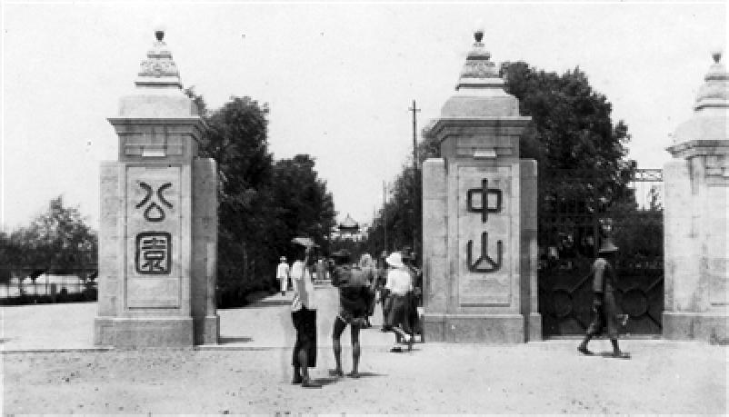
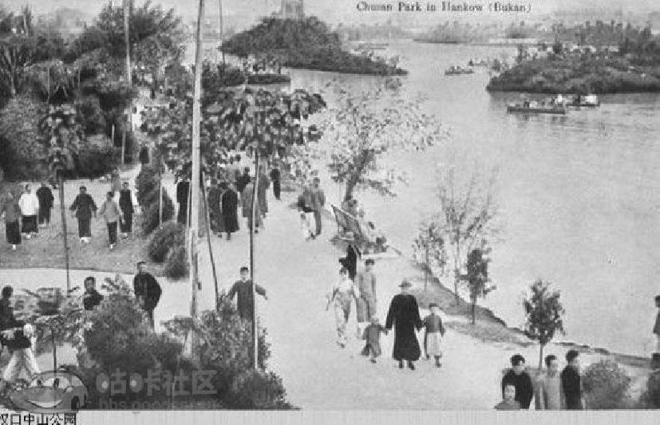
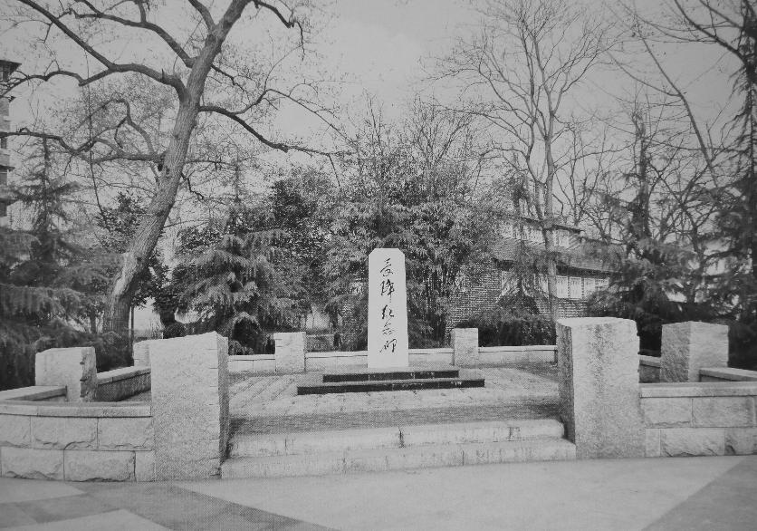

A Brief History of Centurl Park

The Centurl Park, named Zhongshan Park was originally the private garden built in the early 20th century for Liu Xinsheng, the landlord of Hankou. Around 1914, in order to enlist Li Huatang, director of finance of the Hubei military government, Liu gifted this garden to Li, who named it "West Garden". The garden was only 1680 square metres. In 1927, the Hankou Government confiscated the garden as enemy property. Near the West Garden, there is a large piece of open space belonging to the Wu Peifu Fellowship, which was later

In the early summer of 1928, Wu Guoshang, an architectural expert, returned from his studies in England and took charge of the construction of Zhongshan Park. Immediately, the place was surrounded by a wall, soldiers and prisoners were used to dig lakes and pile up mountains. The park area reached 12.5 hectares. The park had an artificial lake connected by bridges from several small islands. There was also a sports ground, a swimming pool, an ice rink, a public education centre and a memorial to the Prime Minister.
After partial completion, the park was first opened to the public on 10 June 1929, and officially opened to the public on 10 October of the same year (the anniversary of the Xinhai Uprising) . The park was officially named "Hankou Zhongshan Park" in honour of Dr Sun Yat-sen. The main gate of the park was designed according to the Buckingham Palace, and the stone piers on both sides of the gate were engraved with characters "Zhongshan" and "Park".
In 1931, Hankou flooded and the park was submerged, leaving only the lake and the swimming pool deck.
In 1938, the Japanese invaded Wuhan and ordered the demolition of the bronze statue of Chiang Kai-shek, and dug up the park's rockery to build a motor depot, and tied military horses to the trees. Trees were nibbled by horses and withered, and some were cut down to build fortifications, turning the park into a military barracks.
